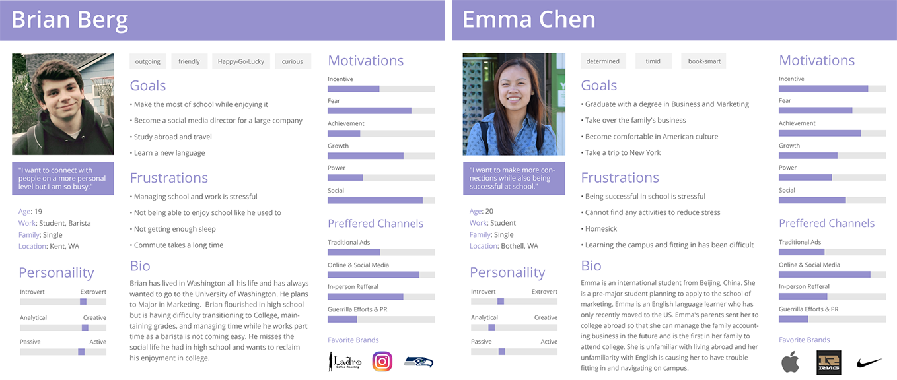

Pocket Husky is a mobile app that engages student interaction and exploration on the campus. The app is an augumented reality game comprised of multiple tools to assist the students with resources and information.
UI/UX Design
Front-end Development
The social interactions on the campus appear to be intimidating. Students on campus often look busy and do not want to be bothered. Most students are not willing to intrude by initiating any social interactions.
We are ignoring what is happening around us, technology is not connecting students personally. Most people seem to be more entertained when they are on their devices than actually interacting with people in real life.
Some students have no idea what is going on around the campus, there are various campus resources but not every student is familiar with where exactly to get help from. Some campus events and entertainment are not well known.
The UW Bothell campus lacks a unique identity. UWB has been growing rapidly from a commuter-based college to a University, yet there are not a lot of things(for example: public art) that makes UWB stands out from the other campuses.
Based on the campus research survey we have performed, 57.2% of respondents constantly interact with students outside of their classes and 66.6% of respondents wish to increase their social interactions on campus.
What are some problems that the students are seeing?
Lack of real connection to others.
Too much classwork, not enough social interactions.
What is something that the students wish to have on campus?
...[Provide] resources, a sense of community and by holding more activities for students.
More information around campus about the events and when they are.
Based on the results of the user research, the user personas were created to provide a better understanding on how Pocket Husky would solve the problems. For example, Brian agrees that the campus needs more interaction and Emma believes that it would be helpful to have some guidance to resources and information. These problems could be resolved by a tool that provides helpful resources with interesting features that encourage students to interact with the campus.
